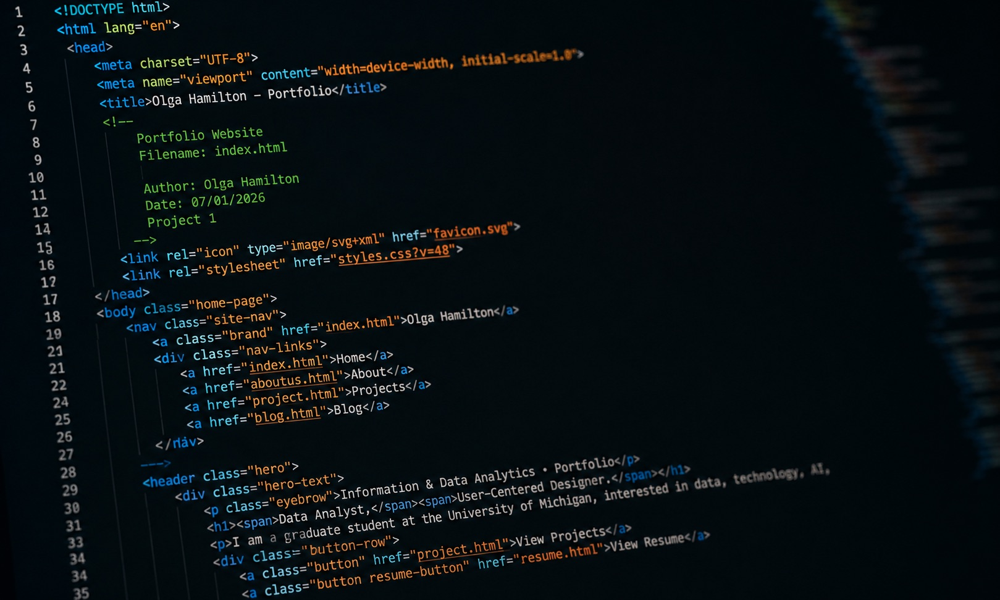

Typography
Clear heading and body-text hierarchy.
Web Design · Development
Designed and developed my digital professional identity. Thank you to Elena Godin for her support, mentorship, and guidance throughout this project.

01 · Project overview
I designed and developed my personal portfolio website to showcase my work in data analytics, AI, user-centered design, and technology.
Rather than using a website template, I built the site to reflect my professional identity while practicing front-end development and user-centered design. It continues to evolve as I add new projects, experiences, and skills.
02 · The challenge
My work was spread across GitHub, Figma, presentations, course materials, and other platforms. I needed to communicate not only what I created, but also how I approached each problem and what I learned.
How might I create a professional portfolio that clearly communicates my work across data, design, AI, and technology while remaining easy to explore?
03 · Project goals
04 · Planning the experience
Organizing projects by experience allows visitors to follow my academic and professional growth while quickly finding individual projects.
05 · Design system
Clear heading and body-text hierarchy.
A consistent palette across navigation, cards, buttons, and sections.
Images communicate the human side of my work.
Shared navigation, cards, galleries, calls to action, and footers.
06 · Development
Structures navigation, case studies, project galleries, resume content, contact information, and footers.
Creates layouts, typography, color, responsive behavior, project cards, menus, hover effects, and buttons.
Adds interaction where needed for navigation and other website components.
07 · Reusable case studies
Problem → Research → Process → Solution → Results → Reflection
Depending on the project, case studies can include data visualizations, Figma prototypes, repositories, research findings, technical documentation, user feedback, and image galleries.
08 · Development workflow
Moving from local HTML and CSS through GitHub, deployment, and a custom domain gave me practical experience across the complete website-development lifecycle.
09 · User-centered improvements
10 · Key features
Work organized by academic and professional experience.
UX projects can include embedded Figma experiences.
Visual work presented through images and project cards.
Learning experiences and professional growth in one place.
Quick access to professional qualifications.
Clear links to LinkedIn, GitHub, and email.
11 · What I learned
Building this website taught me how to combine content strategy, user-centered design, front-end development, version control, and deployment into a complete digital experience.
The project also strengthened my ability to communicate technical and design work to different audiences.
12 · Reflection
Building my portfolio brought data, design, and technology together while showcasing my work and growth.